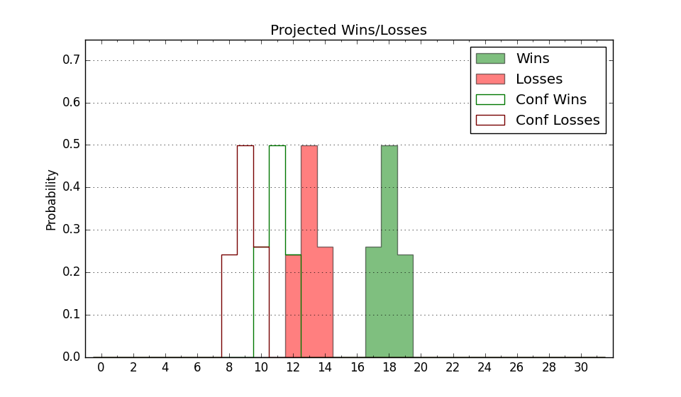

| Home | Game Probabilities | Conferences | Preseason Predictions | Odds Charts | NCAA Tournament |
| City: | Villanova, Pennsylvania | |
| Conference: | Big East (5th)
| |
| Record: | 10-8 (Conf) 17-12 (Overall) | |
| Ratings: | Comp.: 20.6 (25th) Net: 20.6 (25th) Off: 114.1 (53rd) Def: 93.5 (15th) SoR: 37.4 (63rd) |
| Remaining | ||||||
|---|---|---|---|---|---|---|
| Date | Opponent | Win Prob | Pred. | |||
| 3/6 | @ Seton Hall (57) | 49.9% | L 65-66 | |||
| 3/9 | Creighton (8) | 47.4% | L 69-70 | |||
| Previous | Game Score | |||||
| Date | Opponent | Win Prob | Result | Off | Def | Net |
| 11/6 | American (272) | 97.2% | W 90-63 | 10.4 | -0.5 | 9.9 |
| 11/10 | Le Moyne (307) | 98.1% | W 83-57 | 2.3 | -3.0 | -0.6 |
| 11/13 | @Penn (186) | 84.0% | L 72-76 | -3.9 | -16.8 | -20.7 |
| 11/17 | Maryland (62) | 77.6% | W 57-40 | -10.8 | 26.0 | 15.2 |
| 11/22 | (N) Texas Tech (33) | 55.0% | W 85-69 | 9.5 | 11.5 | 21.0 |
| 11/23 | (N) North Carolina (11) | 35.6% | W 83-81 | 5.6 | 4.7 | 10.3 |
| 11/24 | (N) Memphis (70) | 68.8% | W 79-63 | 3.4 | 11.8 | 15.1 |
| 11/29 | Saint Joseph's (96) | 85.6% | L 65-78 | -18.2 | -35.8 | -54.0 |
| 12/2 | (N) Drexel (128) | 82.9% | L 55-57 | -16.0 | -3.1 | -19.1 |
| 12/5 | @Kansas St. (76) | 55.7% | L 71-72 | -2.3 | 0.2 | -2.1 |
| 12/9 | UCLA (112) | 88.3% | W 65-56 | -2.9 | 2.4 | -0.5 |
| 12/20 | @Creighton (8) | 20.9% | W 68-66 | -9.4 | 25.4 | 16.0 |
| 12/23 | @DePaul (303) | 93.6% | W 84-48 | 3.0 | 22.9 | 25.9 |
| 1/3 | Xavier (56) | 77.0% | W 66-65 | -6.5 | -1.8 | -8.4 |
| 1/6 | St. John's (35) | 69.7% | L 71-81 | -13.0 | -10.7 | -23.7 |
| 1/12 | DePaul (303) | 98.0% | W 94-69 | 22.6 | -23.6 | -0.9 |
| 1/15 | @Marquette (15) | 26.0% | L 74-87 | 12.3 | -22.6 | -10.4 |
| 1/20 | Connecticut (4) | 35.2% | L 65-66 | 5.7 | -1.1 | 4.6 |
| 1/24 | @St. John's (35) | 40.3% | L 50-70 | -17.0 | -3.0 | -20.0 |
| 1/27 | @Butler (63) | 51.0% | L 81-88 | -8.6 | -7.2 | -15.8 |
| 1/30 | Marquette (15) | 54.5% | L 80-85 | 7.7 | -19.7 | -12.0 |
| 2/4 | Providence (53) | 76.5% | W 68-50 | 4.6 | 12.9 | 17.5 |
| 2/7 | @Xavier (56) | 49.6% | L 53-56 | -17.3 | 13.9 | -3.4 |
| 2/11 | Seton Hall (57) | 77.2% | W 80-54 | 17.6 | 12.0 | 29.6 |
| 2/16 | @Georgetown (176) | 82.5% | W 70-54 | -3.4 | 16.8 | 13.4 |
| 2/20 | Butler (63) | 78.0% | W 72-62 | 10.2 | -6.0 | 4.3 |
| 2/24 | @Connecticut (4) | 13.8% | L 54-78 | -14.5 | -2.8 | -17.3 |
| 2/27 | Georgetown (176) | 94.1% | W 75-47 | 4.3 | 16.6 | 20.8 |
| 3/2 | @Providence (53) | 48.9% | W 71-60 | 18.7 | 2.4 | 21.1 |
| Stats & Trends | |||||
|---|---|---|---|---|---|
| Current | Day | Week | Month | Season | |
| Composite | 20.6 | +0.0 | +1.3 | +3.3 | -2.0 |
| Comp Rank | 25 | -- | +3 | +16 | -11 |
| Net Efficiency | 20.6 | +0.0 | +1.3 | +3.5 | -- |
| Net Rank | 25 | -- | +3 | +17 | -- |
| Off Efficiency | 114.1 | -0.0 | +0.6 | +0.9 | -- |
| Off Rank | 53 | -- | +4 | +4 | -- |
| Def Efficiency | 93.5 | +0.1 | +0.7 | +2.7 | -- |
| Def Rank | 15 | -- | +5 | +25 | -- |
| SoS Rank | 13 | -- | -3 | -6 | -- |
| Exp. Wins | 18.0 | +0.0 | +0.7 | +1.5 | -3.4 |
| Exp. Conf Wins | 11.0 | +0.0 | +0.7 | +1.5 | -2.1 |
| Conf Champ Prob | 0.0 | -- | -- | -0.0 | -21.8 |

| Advanced Stats | ||
|---|---|---|
| Stat | Value | Rank |
| Off Eff FG % | 0.540 | 73 |
| Off Ast Ratio | 0.160 | 74 |
| Off ORB% | 0.264 | 221 |
| Off TO Rate | 0.123 | 24 |
| Off FT Ratio | 0.318 | 212 |
| Def Eff FG % | 0.454 | 25 |
| Def Ast Ratio | 0.133 | 108 |
| Def ORB% | 0.204 | 5 |
| Def TO Rate | 0.147 | 170 |
| Def FT Ratio | 0.253 | 20 |